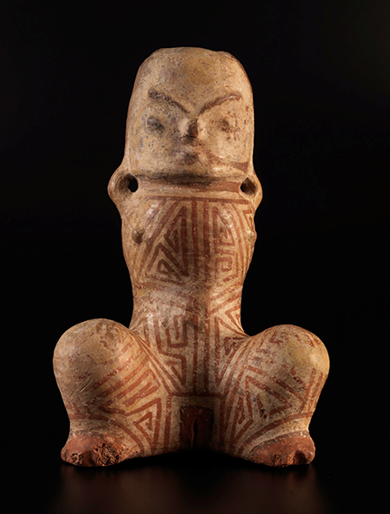
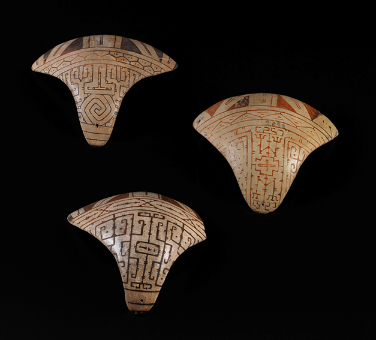
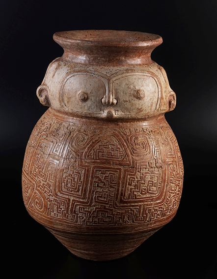
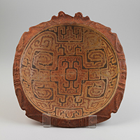

Data de Origem/Produção:
400 a 1400 A.D.
Local de Coleta/Origem:
Ilha de Marajó.
Dimensões:
23,5 cm.
Descrição:
Cerâmica Marajoara.
Esta peça da Coleção Amazônica do Setor de Arqueologia sintetiza em uma mesma representação da figura humana os princípios feminino e masculino, um aspecto que pela sua recorrência parece ter tido particular relevância na cosmologia Marajoara. Apresenta o tronco e os membros inferiores recobertos de pintura corporal em motivos geométricos, na cor vermelha sobre fundo branco, com duas pequenas alças laterais e uma reentrância no pescoço para amarração e suspensão.

Data de Origem/Produção:
400 a 1400 A.D.
Local de Coleta/Origem:
Ilha de Marajó.
Dimensões:
Altura média das três peças entre 11 e 12cm.
Descrição:Cerâmica Marajoara.
Pintadas em vermelho e preto sobre fundo branco, estes tapa-sexos femininos eram modelados individualmente, acompanhando a anatomia pubiana de suas portadoras. Padrões geométricos, muitos deles correspondendo a representações estilizadas da figura humana, preenchem seus quatro campos decorativos, que em alguns exemplares são reduzidos a apenas três. Enquanto a faixa superior varia pouco, a seguinte e também a inferior apresentam maior variabilidade. O campo central, maior, não se repete nunca. Apresentam em cada uma das extremidades orifícios para amarração, muitos deles desgastados pelo uso.

Data de Origem/Produção:
400 a 1400 A.D.
Local de Coleta/Origem:
Ilha de Marajó.
Dimensões:
53 cm.
Descrição:
Cerâmica Marajoara.
Com pintura em vermelho sobre fundo branco, apresenta o corpo profusamente decorado pela técnica da excisão, com variações em torno da figura humana estilizada e de motivos geométricos. Urnas funerárias elaboradas como esta, em geral contendo objetos de prestígio em seu interior, provavelmente destinaram-se a indivíduos de status social diferenciado na sociedade Marajoara.

Data de Origem/Produção:400 a 1400 A.D.
Local de Coleta/Origem:
Ilha de Marajó.
Dimensões:
38,5 cm.
Descrição:
Cerâmica Marajoara.
Tigela cerimonial decorada internamente com pintura policroma, em vermelho e preto sobre fundo branco, com motivos geométricos e representações estilizadas da figura humana. A borda, sem pintura, recebeu decoração em relevo, com representações de serpentes e rostos humanos dispostos alternadamente. No verso a peça apresenta uma exuberante decoração plástica com motivos geométricos feitos com a técnica da excisão.
Alguns desses objetos tinham funções especificas, por exemplo, peças para representar o poder des elites, peças ritualisticas, peças para honrar os mortos, etc.
E as caracteristicas são:
Urnas Funerárias:Vasos ricamente decorados que guardavam os ossos de ancestrais e líderes, demonstrando respeito à memória e à ancestralidade
Uso Doméstico e Ritualístico: Vasilhas para o preparo de alimentos como mandioca e açaí dividiam espaço com objetos rituais, como tangas femininas de cerâmica e bancos ornamentados para xamãs e chefes.
Poder das Elites:A sofisticação e o tamanho das peças serviam para marcar a hierarquia e o poder político das lideranças locais sobre as aldeias.
Last updated 3 mins ago
Etec de Hortolândia 2026 ©-Todos os direitos reservados Trabalho acadêmico sem fins lucrativos.
TOPO